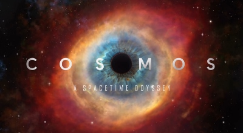

Merhaba. Ben Mithat Furkan Kaya. Sinopta yaşıyorum. Uludağ Üniversitesi Elektrik Elektronik Mühendisliği mezunuyum. Mezun olduktan sonra kariyerimi Front-end Web Geliştirme alanında devam ettirmeye karar verdim. Bu karar doğrultusunda Kodluyoruz platformundaki online eğitimlerle yazılım geliştirme teknolojilerini öğrenmeye başladım. Bunun dışında vaktimi polisiye roman okumak, belgesel izlemek, film izlemek, yürüyüş yapmak gibi aktivitelere ayırmaya çalışıyorum. Özellikle uzay araştırmaları ve doğal yaşam temalı belgeselleri izlemekten keyif alıyorum.
Kozmos: Bir Uzay Serüveni (orijinal adı Cosmos: A Spacetime Odyssey), 2014 Amerikan yapımı bir bilimsel belgesel dizisidir. 1980 yılında Carl Sagan'ın yazıp sunduğu Cosmos: A Personal Voyage dizisinin devamı niteliğindedir. Bu belgesel bilimadamlarının çalışmalarını sinematik bir şekilde anlatmakta, kozmostan ve evrenden örnekler vererek uzay-zamanı açıklamaktadır. Sunuculuğunu ilk sunucu Carl Sagan'ın eski öğrencisi, astrofizikçi Neil deGrasse Tyson üstlenmektedir. İlk dizi gibi 13 bölümden oluşmaktadır.
